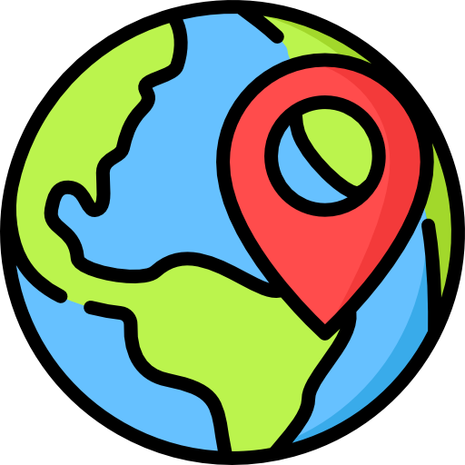
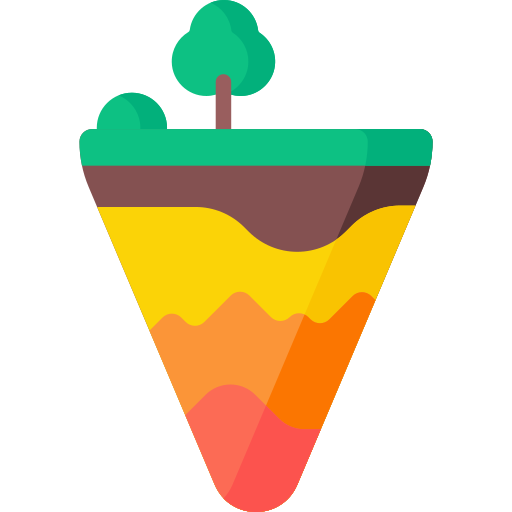
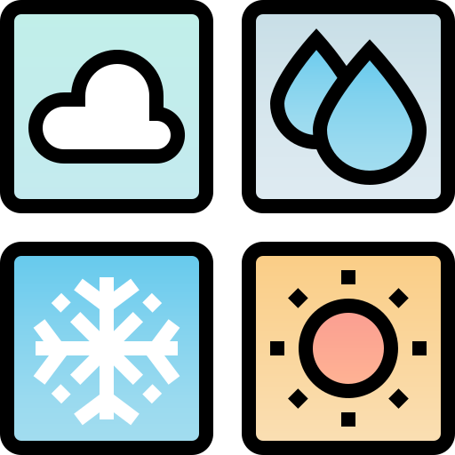
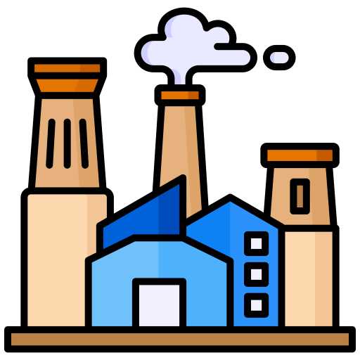
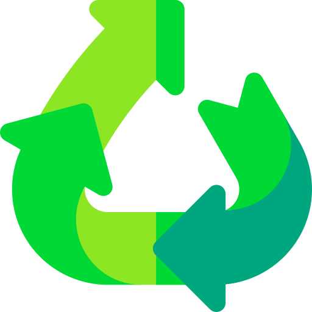

França
Boas-vindas à França
Localização Geográfica
A França está localizada na Europa Ocidental, fazendo fronteira com Bélgica, Luxemburgo, Alemanha, Suíça, Itália, Mônaco, Espanha e Andorra.
Geográfia
A França possui uma grande diversidade geográfica, incluindo montanhas (os Alpes), planícies (a Bacia de Paris) e litoral mediterrâneo.
Pratos Típicos
Croissant, Coq au Vin, Ratatouille, Crème Brûlée.
Futebol
A França tem uma liga de futebol (Ligue 1) e uma seleção nacional de renome.
Dados Demográficos
População de aproximadamente 67 milhões de habitantes.
Clima
Varia de um clima oceânico no oeste a um clima mediterrâneo no sul.
Setores Industriais
Moda de alta costura, vinho, indústria automobilística.
Sustentabilidade
Investimentos em energia renovável e conservação ambiental.